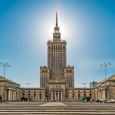
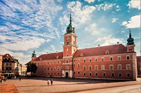

Warszawa to stolica Polski, położona nad Wisłą, będąca największym miastem kraju pod względem ludności. To dynamiczna metropolia łącząca bogatą, odbudowaną historię (m.in. Stare Miasto wpisane na listę UNESCO) z nowoczesną architekturą, której symbolem jest Pałac Kultury i Nauki. Miasto stanowi kluczowy ośrodek gospodarczy i kulturalny

Pałac Kultury i Nauki (PKiN) w Warszawie to ikoniczny, 237-metrowy wieżowiec (wraz z iglicą) zbudowany w latach 1952–1955, będący najwyższym zabytkiem w Polsce. Łączy funkcje kulturalne, rozrywkowe i biznesowe, mieszcząc teatry, kina, muzea oraz popularny taras widokowy na XXX piętrze, z którego można podziwiać panoramę miasta.

Zamek Królewski w Warszawie to barokowo-klasycystyczna rezydencja, pełniąca funkcje muzealne i reprezentacyjne. Historyczna siedziba książąt mazowieckich, królów Polski oraz Sejmu, położona przy Placu Zamkowym. Odbudowany w latach 70. i 80. XX wieku zamek jest symbolem państwowości, słynącym z bogato zdobionych wnętrz i bogatej historii.